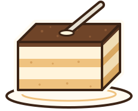

Tyraj Misiu
Certyfikat robienia tiramisu
Firma Tyraj Misiu zaświadcza, że
Twoje imię
ma za sobą tiramisu zrobione zgodnie z przepisem firmy i otrzymuje stopień
Czeladnik mascarpone
Zaznacz kroki, które masz za sobą, wpisz imię i daj Wiksasowi do zatwierdzenia. Gotowy certyfikat wydrukujesz albo zapiszesz jako PDF.

Tyraj Misiu
Firma Tyraj Misiu zaświadcza, że
Twoje imię
ma za sobą tiramisu zrobione zgodnie z przepisem firmy i otrzymuje stopień
Czeladnik mascarpone
Certyfikat czeka na zatwierdzenie Wiksasa.